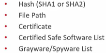

Integrated Application Control:
- Inital default deplyment allows all applications to run
- Set up criteria to block(avaliação) para avaliar o software no seu ambiente
- Set the criteria to block or stop specific application from executing

- Lockdown Mode:
- intensive scan which creates an Inventory database on the agent
- All application not inventoried by default will be Assessed and Logged
- By default it is set to assessment mode
- Allow a period of time to evaluate what users are running outside the inventory to determine allow criteria.
- to block the applications not inventoried, uncheck the Assessment Mode box within the Apex Central Policy.
- Regras adicionais podem ser configuradas permitindo que os programas ignorem o bloqueio e Lista de programas confiaveis tambem.
Integrated Endpoint Sensor:
Endpoint Detection and Response(EDR)
- Managed Detection and Response(MDR)
Higher System Requirements
- raises the minimum requirements by approximately 20 percent
Agents have a local database for recording events
- Be adjusted within Apex Central Policies
SQL 2016 and above with Ful Text Search required